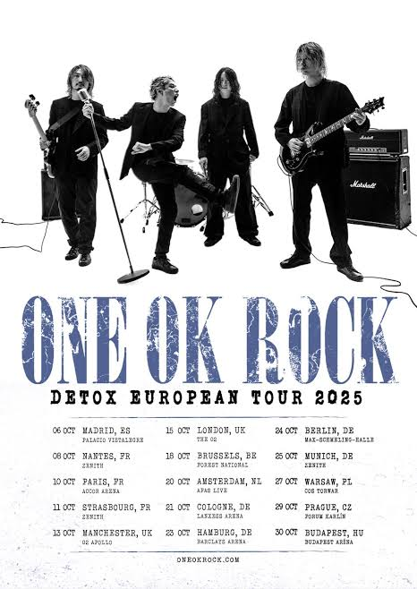
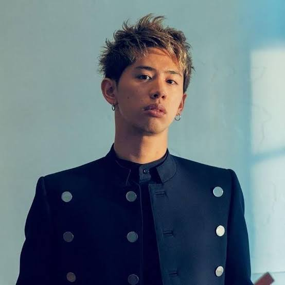
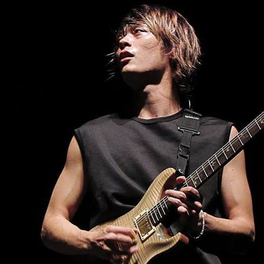
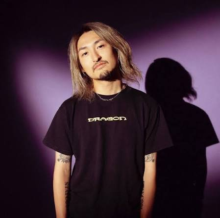

One Ok Rock (ワンオクロック Wan Oku Rokku?, estilizado como ONE OK
ROCK) es una banda japonesa de rock formada en el año 2005,
actualmente compuesta por cuatro miembros, Takahiro Moriuchi
(vocalista), Toru Yamashita (guitarra), Ryota Kohama (bajo) y Tomoya
Kanki (batería).
Originalmente la banda estuvo compuesta por cinco miembros hasta que
el guitarrista Alexander Onizawa abandonó el grupo en 2009. Sus
canciones enérgicas no sólo han conseguido atraer gran atención en su
país natal y Asia, sino también considerablemente en el extranjero
llevándolos a realizar giras internacionales por Europa y América. A
la fecha cuentan con once álbumes de estudio

Fechas del tour internacional por Europa.
Integrantes
Takahiro Moriuchi
Takahiro Moriuchi (森内 貴寛), conocido artísticamente como Taka
"Halcon" , es un cantante, compositor y músico japonés famoso por
ser el vocalista principal de la banda de rock ONE OK ROCK. Nació el
17 de abril de 1988 en Tokio, Japón, y es ampliamente reconocido por
su potente registro vocal de tenor agudo y su capacidad para cantar
con fluidez tanto en japonés como en inglés.

Takahiro Moriuchi.
Toru Yamashita
Nacido el 7 de diciembre de 1988 en Osaka, Japón es un virtuoso
músico, compositor y el líder y guitarrista principal de la banda de
rock alternativo ONE OK ROCK. Es el cerebro estratégico detrás de la
agrupación, encargado de conducirlos hacia el éxito global y
mantener la cohesión del grupo desde sus cimientos.

Toru Yamashita.
Ryota Kohama
Es un músico japonés, famoso a nivel mundial por ser el bajista y
miembro fundador de la banda de rock ONE OK ROCK. Nacido el 4 de
septiembre de 1989 en Osaka, es el integrante más joven de la
agrupación y destaca por su desbordante energía y carisma en el
escenario. Comenzó su carrera artística en la infancia como bailarín
de hip-hop formando parte del grupo juvenil HEADS junto a Toru
Yamashita, actual guitarrista de ONE OK ROCK.

Ryota Kohama.
Tomoya Kanki
Es un aclamado músico japonés, mundialmente reconocido por ser el
baterista de la banda de rock ONE OK ROCK. Nacido el 27 de junio de
1987 en la Prefectura de Hyōgo, es el miembro de mayor edad de la
agrupación. Es ampliamente reconocido en la industria musical por su
impecable precisión rítmica, lo que le ha ganado el apodo de "The
Metronome" (El Metrónomo).